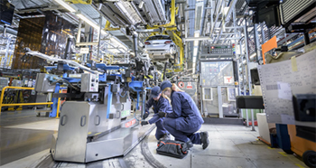
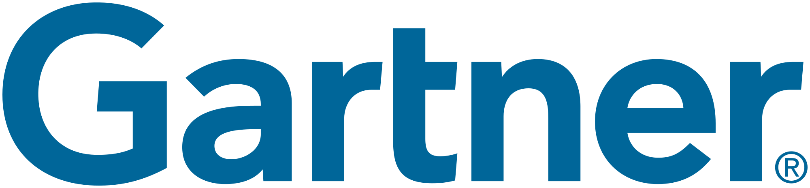
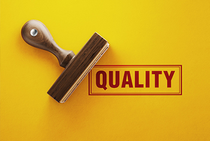

There are no items found matching the selected filters. Perhaps some of the following options will be
helpful.
Quality Management White Paper
Why Quality Matters
The pressure to cut costs, increase margins and invest in transformative technologies often leaves
little
left to spend on quality. However, these pressures can lead to a status quo approach to quality that
can
eventually result in compliance problems, damage to brand reputation and revenue losses.
Quality Management White Paper
Why the Cost of Doing Nothing is a Quality Concern
The fast pace of modern society means that companies
who fail to keep up with the latest business trends and
technology are in danger of becoming the dinosaurs
of the business world. For many, the cost of doing nothing was a slow descent
into irrelevance or worse...
Quality Management White Paper
How to Select a Quality Management System: 7 Key Elements for Successful Implementation
In many organizations today, implementing a
software-based quality management system (QMS)
is a strategic priority for operational excellence.
As demand for QMS solutions grows, so does the
vendor landscape, complicating decisions over which
choice will ensure a successful implementation and
facilitate mission-critical quality initiatives.
Quality Management White Paper
8 Elements of an Effective Document Control System
Document control software that automates document
creation, approval, distribution and archiving is the
cornerstone of quality, environmental health and
safety (EHS). In this white paper, we look at eight
elements of an effective document control system
and explore the benefits of using document control
to drive operational excellence.
Quality Management White Paper
ETQ QMS Guide: Time to Drop Paper & Spreadsheet-based Processes
In 2018,
United Airlines redesigned its inflight magazine
to weigh an ounce less than the previous issues saving the company $290,000 in fuel and operating
costs.
This perfectly illustrates a paradigm shift within
competitive markets; gone are the days of relying on
the old company adage, “this is how it’s always been
done.” Business leaders now ask, “how can it be done
smarter, faster and easier?”
Supplier Quality White Paper
Supplier Quality is Only as Strong as Your Weakest Link
As your supplier list grows, so does the risk of supplier quality failure. With the potential cost
and
damage to brand reputation of a single recall, organizations must proactively manage supplier quality.
Upcoming Webinar — Thursday, May 21
| 1:00 PM EST
EHSQ: Real World EHS and Quality Convergence Examples
Join a panel of your peers and industry experts for an interactive look into the convergence of EHS and
QMS to create an integrated platform for continuous improvement.
The latest Featured Customers Customer Success Report ranks the leading quality management software tools
and solutions based on data from its customer reference platform, market presence, web presence, social
presence, additional data aggregated from online sources and media properties. See the latest Featured
Customers report for some ETQ customer references.
ETQ 2020 Survey and Analysis
The Rise of Quality as a Strategic Business Initiative
ETQ engaged leading research firm, Salloway Associates, to survey 300 C-level executives, quality and IT
managers to learn key trends and common challenges with their quality initiatives. This first-of-its-kind
survey uncovered an important shift how organizations are treating quality – today, more organizations
view quality as a strategic initiative, not just a compliance need. In fact, survey data shows 66% of
organizations categorize quality as a strategic growth investment with and average ROI on quality programs
of 23%. This ebook also includes the results of an additional survey on the business and quality process
impacts of COVID-19.
Infographic
Move Your Quality Group from a Cost-center to a Profit Center with ETQ Reliance
ETQ Reliance meets you wherever you are on your quality journey by easily integrating with and enhancing
your existing business processes to deliver maximum value from your QMS investment. By automating
workflows, breaking down data silos and increasing visibility across the quality ecosystem, ETQ Reliance
has systematically reduced risk and improved performance for customers such as GE, Subway and Avanos.
Supplier Quality White Paper
Turning Your Supply Chain into a Powerful Differentiator
Today’s customers are harder than ever to satisfy. Their expectations have increased exponentially as
mobile devices and digital channels empower them to maintain complete control of the buying process.
For both B2B and B2C businesses, the pressure is on to adapt quickly to changing behaviors and address
ever-increasing competition.
Quality Management White Paper
Why Quality Matters
The pressure to cut costs, increase margins and invest in transformative technologies often leaves little
left to spend on quality. However, these pressures can lead to a status quo approach to quality that can
eventually result in compliance problems, damage to brand reputation and revenue losses.
Quality Management White Paper
Why the Cost of Doing Nothing is a Quality Concern
The fast pace of modern society means that companies
who fail to keep up with the latest business trends and
technology are in danger of becoming the dinosaurs
of the business world. For many, the cost of doing nothing was a slow descent
into irrelevance or worse...
Quality Management White Paper
How to Select a Quality Management System: 7 Key Elements for Successful Implementation
In many organizations today, implementing a
software-based quality management system (QMS)
is a strategic priority for operational excellence.
As demand for QMS solutions grows, so does the
vendor landscape, complicating decisions over which
choice will ensure a successful implementation and
facilitate mission-critical quality initiatives.
Quality Management White Paper
The Automation Guidebook: Top 3 Processes to Automate to Improve Quality Management
Quality professionals recognize that streamlining
processes can deliver significant returns, but many
are unsure where or how to start. With dozens or
even hundreds of processes, automating them all
can seem overwhelming.
In fact, research shows that while a majority of
companies want to automate critical quality processes,
less than half of them have actually made the leap.
Quality Management White Paper
How Manufacturers Mitigate Quality and Safety Risks
Manufacturers face unprecedented threats from every direction including prolonged global trade
uncertainties, market volatility, rapidly shifting consumer preferences and more complex supply chains.
Manufacturers face increasing levels of risk and the potential negative impact to both the bottom line and
brand reputation. Learn how manufacturing leaders manage their toughest quality challenges with ETQ.
Quality Management White Paper
Learn How Global Electronics Brands Unlock Efficiency & Transform Quality
Customer expectations grow more demanding by the day, creating enormous risks for electronics and
appliance manufacturers struggling with not only shrinking product life cycles, but also a roster of more
complex products. Learn how ETQ helps electronics leaders manage their toughest quality challenges.
Quality Management White Paper
8 Elements of an Effective Document Control System
Document control software that automates document
creation, approval, distribution and archiving is the
cornerstone of quality, environmental health and
safety (EHS). In this white paper, we look at eight
elements of an effective document control system
and explore the benefits of using document control
to drive operational excellence.
Quality Management White Paper
ETQ QMS Guide: Time to Drop Paper & Spreadsheet-based Processes
In 2018,
United Airlines redesigned its inflight magazine
to weigh an ounce less than the previous issues saving the company $290,000 in fuel and operating costs.
This perfectly illustrates a paradigm shift within
competitive markets; gone are the days of relying on
the old company adage, “this is how it’s always been
done.” Business leaders now ask, “how can it be done
smarter, faster and easier?”
Supplier Quality White Paper
Supplier Quality is Only as Strong as Your Weakest Link
As your supplier list grows, so does the risk of supplier quality failure. With the potential cost and
damage to brand reputation of a single recall, organizations must proactively manage supplier quality.
Quality Management White Paper
Turning Your Supply Chain into a Powerful Differentiator
Customer expectations have increased exponentially as
mobile devices and digital channels empower them
to maintain complete control of the buying process.
For both B2B and B2C businesses, the pressure is on
to adapt quickly to changing behaviors and address
ever-increasing competition.
Quality Management White Paper
ETQ Guidebook: Improving Quality Through Advanced Analytics
The role of data and analytics is crucial in business optimization strategies. Organizations with a
strong data culture can provide insights into supplier quality, manufacturing processes, customer feedback
and complaints and problem resolution.

Quality Management White Paper
Is Your Corrective Action Process Blocking Continuous Improvement?
New product introduction (NPI) is critical to corporate success,
particularly for the industrial or manufacturing enterprise. It’s an
important lever to improve market share and revenue, defend existing
markets against competitors, and improve the customer’s experience.
Developing and launching profitable, timely, high-quality products is
more important today than ever before.
Food Safety White Paper
ETQ Delivers Rapid Value to Solve Food & Beverage Quality Challenges
Food and beverage manufacturers today must grapple
with a host of issues that impact quality, from rapidly
evolving regulatory issues
to ever more complex supply chains. In order to stay
competitive, food and beverage firms must know how
to quickly and effectively respond to this dynamic
market landscape.
Quality Management White Paper
Medical Device Leaders Accelerate Their Quality Journey with ETQ Reliance
Medical device companies are facing an ever-evolving landscape of
regulatory challenges and shifting obstacles for marketing products.
One of the fastest-growing risks centers on how companies will adapt to
the rapidly approaching implementation EU Medical Device Regulation
(MDR) deadline of May 26, 2020, which will usher in the biggest changes to
European device legislation in more than 20 years.
Food Safety White Paper
Are You Ready for FSMA 2020?
This time,
your quality team caught the problem before anyone
got sick. Next time, you might not be so lucky. Your
manual tracking system is just not up to the task of
tracking all of your products to their sources, and
even though no one got sick, each recall is costing the
company millions in lost revenue, lost good will, and
production downtime. You are tired of reacting and
want to be able to predict and mitigate risks before
they become public-facing.
Regulatory Compliance White Paper
The FDA Migration from QSR to ISO 13485 and QSIT to MDSAP
The push for medical device innovation is reaching
a high point, as manufacturers seek to meet needs
around the rising prevalence of chronic conditions
and an aging population. These scientific innovations
demand new, more flexible regulatory approaches to
help speed products safely to market.
To keep pace with innovation and ease
regulatory burden and compliance, significant,
broad regulatory overhaul is taking place around the
world.
Regulatory Compliance White Paper
ETQ Reliance Validation
Validation is one of the biggest pain points for life science companies when implementing new software
into their existing IT infrastructure. Learn how ETQ’s Reliance Software-as-a-Service solution can
help life sciences companies clear existing barriers to validation with ease.
Quality Management White Paper
Your Guide to Employee Training
Change can scare a lot of people, but in today’s
workplace managing change is what keeps people
relevant. Employee training is key to most change initiatives.
This is important because people are the cornerstone
of any successful business operation—therefore the
overall success of a business often correlates directly
with the knowledge of its employees. This is where the
Training Management System comes in.
Risk Management White Paper
The Risk Management Guidebook: Strategies, Tools for Success
Mergers, company growth, new
regulations and standards are making compliance
increasingly complex, leaving room for hidden
problems to grow in size and cost.
To achieve process
excellence and secure your brand’s reputation,
companies must have a strong grasp of risk within
their organization. Risk management provides a
critical lever for managing complexity, acting as
a universal measuring stick for standardized
decision-making in any area of the business.
Risk Management White Paper
How to Define and Build a Risk Management Strategy for Quality and Compliance Management Systems
Change is the only constant in business. Evolving
products, processes and regulations are all driving one
another towards faster rates of change, making quality
and compliance management more and more complex.
Organizations must address quality, safety
and compliance, but these efforts can become
disorganized with added business complexity.
The question becomes, how can companies deliver
on mission-critical responsibilities in the face
of accelerating change?
Risk Management White Paper
Risk Management Software
The latest revisions of ISO standards require companies to apply risk-based thinking in their
process planning, operations and performance evaluation. To embrace this shift, risk must be
considered in every quality activity. Having tools to identify, mitigate and report on risk lets you
seamlessly incorporate risk into all processes rather than keeping it a siloed activity. Quality conscious
companies visualize, streamline and share their most critical process information to
turn risk insight into action that transforms quality and compliance into market advantage.
Risk Management White Paper
The EHS Risk Management Guidebook: A Practical How-To Guide
Nearly 4 in 5 Environmental, Health and Safety (EHS) professionals recognize that risk management is a
key
factor in achieving EHS goals, yet mitigating risk with technology remains a challenge.
EHS Management White Paper
Your Ultimate Guide to Employee Safety
The best way to reduce incident rates in your workplace is to create a total safety culture,
where employee safety is a company-wide priority. This requires company-wide
buy-in, comprehensive training and full communication from the top level down.
Risk Management White Paper
Getting Started with Risk in ISO 9001:2015
The old
mindset of using corrective and preventive actions to deal with
adverse events has been replaced with the risk-driven approach,
aiming to prevent it from happening rather than recovering
once it happens. For those that are new to Risk Management,
however, this can be a challenging shift. Not only do business
leaders need to understand the latest standard, they need to
understand the role of risk and the tools available to them to
help manage risk.
Quality Management White Paper
Key Changes in ISO 9001:2015
ISO 9001:2015 brought with it a mindset shift. While the requirements are still there, the 2015 revisions
encourage organizations to focus on the final goal: delivering consistent quality to customers through
people and processes. The flexibility inherent in those changes laid the groundwork for integrating
technology configured to work with a particular organization’s processes and workflows.
EHS and Risk Management Case Study
Nutrien Builds the Foundation of its
Culture of Safety with ETQ Reliance
In 2018, Nutrien was formed to become the largest vertically integrated agricultural input provider in
the world. As with any merger, the technology and tools that support the formation and progress of the
organization need to be aligned.
EHS and Risk Management Case Study
ETQ Helps Global Aircraft Manufacturer
Bring People Home Everywhere, Every time
There is increased customer demand for products that have higher performance and greater capacity than
existing models. While there is a defined record of pioneering flight solutions within the company,
there’s constant pressure to balance safety, quality
and innovation.
Quality Management Case Study
Avanos Uses More than 25 Reliance
Applications to Automate Several Critical
Quality Management Processes
As an early adopter of MDSAP, the company needed to revisit its quality
management strategy and processes in order to ensure compliance and quality
excellence under this new system.
Avanos designed a unique audit Management module on Reliance that was
specific to MDSAP and satisfied the requirements of all five jurisdictions.
Quality Management Case Study
Lumileds: Kaizen Lights the Way
Lumileds is the global leader in light engine technology. Prior to implementing ETQ Reliance, they used a
host of siloed systems across “off the shelf” software, SharePoint, or staff-built software applications
to manage their quality systems and processes.
Regulatory Compliance Case Study
ETQ Reliance: A Customized Solution Becomes a Standard Communication Tool and Creates Visibility and
Improved Transparency
Lubrizol Corporation identified the need to improve the internal processes related to nonconforming
product management.
Quality Management Case Study
Celestica Creates a Globally Harmonized Quality Management Solution with ETQ
With a strong focus on serving the world’s leading technology companies, Celestica provides an end-to-end
supply chain solution for electronics manufacturing. Find out how ETQ Reliance helped Celestica to
harmonize their quality processes across their global organization.
Regulatory Compliance Case Study
Rheem Gets Innovative with ETQ Reliance
Learn how ETQ enabled Rheem to use the existing principles of Systems Development LIfe Cycle (SDLC) but
with an innovative twist that allowed the company to move quickly in a fast-paced business environment.
Quality Management Case Study
Educational Testing Service (ETS)
ETS is the world’s largest private, nonprofit educational testing and assessment organization. ETS has
over 3,000 employees and does business in 150 countries.
Food Safety Case Study
Subway® Selects ETQ Reliance™ and Reaps
the Benefits of Automation
Learn how ETQ Reliance has provided SUBWAY® with a flexible solution that
will grow with their company and scale to meet its future needs, in an automated and configurable solution
that saves time and enhances the end user experience.
EHS Management Case Study
Kimberly-Clark Integrates Safety, Environmental, and Quality Workflows to Achieve Maximum Harmonization
Using ETQ as a platform, K-C was able to integrate their overlapping point solutions into a harmonized
SEQ process. This is allowing them to completely eliminate system fragmentation and is resulting in global
standardization for their organization.
EHS Management Case Study
Kimberly-Clark Streamlines Supplier Management with ETQ
Learn how K-C created a central and secure platform for supplier management by making contracts
searchable across the organization and eliminating inefficiencies by implementing ETQ Reliance as their
automated Quality Management System.
Quality Management Case Study
FUJIFILM Manufacturing U.S.A., Inc Consolidates and Coordinates Processes Using ETQ
Since implementing ETQ Reliance™ web-based compliance management system,
FUJIFILM has combined its external audits into an integrated continuous assessment, greatly reducing the
cost to maintain registration to both ISO 9001 and ISO 14001.
Food Safety Case Study
Carolina Beverage Uses ETQ QMS for Streamlined and Effective Document Management
Since implementing ETQ Reliance™ Carolina Beverage’s initial challenges
have been effectively addressed. They now have almost all Standard Operating Procedures (SOPs) housed
within the ETQ system and have removed all uncontrolled copies from their file server.
Quality Management Case Study
POLARIS Laboratories® Improves Quality System KPIs
POLARIS is an expert in helping customers address tough fluid analysis challenges by interpreting test
results with the most accurate understanding of wear and performance concerns of their equipment.
Quality Management Case Study
DiscGenics® Automates their Quality Processes
DiscGenics was looking for a turn-key solution Quality Management System (QMS) that would support the
company through pre-clinical and clinical trials, into commercialization.
Quality Management/Regulatory Compliance Case Study
Cooper Tire Uses Flexibility of ETQ Reliance™ to Innovatively Implement
Internal Audit Module
ETQ’s flexible platform enabled Cooper Tire to configure the Audits module to meet their requirements,
without extensive programming or development.
Quality Management Case Study
Herman Miller Collaborates and Integrates Using ETQ
Herman Miller, Inc. (HMI), an international office furniture manufacturer, relies on ETQ to manage its
entire document control system, including its supply chain management process.
Food Safety Case Study
Manitoba Harvest Automates Document Control
Manitoba recognized a need for an automated system to help them review documents, make revisions, file
records and store all documents, while also cutting down on management time and efforts.
Food Safety/Regulatory Compliance Case Study
Maple Leaf Farms Standardizes Enterprise-Wide with ETQ Reliance
Maple Leaf Farms is a fourth generation family-owned company. In 2009, with a goal of becoming a
GFSI-certified facility and with the pending FSMA rule, it had begun to realize that document control and
record keeping was a continuous and increasing challenge.

Food Safety Case Study
Epicure™ Gets Automated with ETQ
Reliance™
Epicure needed a flexible solution that would enable it to ensure that the company’s unique processes
could be recreated in an automated workflow. ETQ was able to meet this need by demonstrating its ability
to be flexible without the need for programming knowledge or extensive configurations.
Quality Management Case Study
Virginia Blood Services Fosters Automation Through ETQ Quality Management System
VBS was able to utilize ETQ’s out-of-the-box modules and utilities to automate many of their processes.
Through use of ETQ’s flexible platform, the company was able to configure a new application, which
efficiently managed and tracked a particular process. The automated QC application allows a more efficient
daily QC process at the locations where these analyzers are installed.
Regulatory Compliance Case Study
Implementing a Holistic Airline Safety Management System
Now, more than ever, airline carriers are required to demonstrate their commitment to numerous
regulations — navigating these protocols can be challenging.
Quality Management Case Study
SRC Takes Control of Its Documents with ETQ Reliance
Learn how SRC leveraged ETQ's Reliance to automate and consolidate document workflows, diminish
overproduction and streamline their document update process.
EHS Management Case Study
Alcan Aluminum Corp. Grows Their System with ETQ
ETQ has allowed Alcan to benefit from the automated transactions management and electronic delivery of
documents, freeing up thousands of hours of administrative resources typically associated with the
implementation and maintenance of a Quality System.
Quality Management Case Study
Kay Automotive Graphics Selects ETQ Reliance™ to Automate Document Control
Kay Automotive Graphics uses ETQ to overcome business challenges—for example, preliminary Purchasing
Requisitions, Paid Time Off (PTO) scheduling and any processes that require documented sign-off and
routing like new equipment purchases, maintenance requests, expense reports and more.
Quality Management Case Study
Sikorsky Manages Aviation Safety with ETQ
Sikorsky, a subsidiary of Lockheed Martin, is an American aircraft manufacturer established by Igor
Sikorsky in
1923. The company was among the first to manufacture
helicopters for civilian and military use.
Research and Reports
The Total Economic Impact Of the ETQ Reliance Platform
ETQ commissioned Forrester Consulting to conduct a Total Economic Impact (TEI) study of the Reliance
Platform to examine the potential return on investment enterprises may realize by deploying the ETQ
Reliance platform. Forrester derived its conclusions in large part from information received in a series
of in-depth
interviews we conducted with executives and personnel at four customers, each of which had been using
ETQ’s Reliance platform between one and nine years. Examination of these clients shows significant
productivity and incremental revenue benefits.

Research and Reports
Quality Management, Strategy and Leadership Primer for 2020
According to Gartner, disruptive technologies, rapidly-shifting economic conditions and expanding supply
bases are challenging traditional approaches to quality management, strategy and leadership.This new
Gartner research is particularly relevant in the current crisis and can serve as a template as you plan to
adapt. Shifting the focus from production into design and across the extended supply chain has allowed
companies to identify and respond to quality errors earlier in the product life cycle, saving time and
reducing cost of quality.
Research and Reports
EHS and Quality as a Strategic Focus
EHS and Quality are increasingly managed under a single business function to gain significant process
efficiencies and improved incident prevention, according to recent research from Verdantix.
Research and Reports
Quality 4.0: The Quality Leader’s New Product Introduction Playbook
Read this LNS Research report to learn how to achieve quality objectives and desired outcomes by
instilling a culture of quality.
Research and Reports
Quality 4.0: Get Educated, Get Involved, and Build a Successful Strategy
Read this LNS Research report to learn how to build an effective Quality 4.0 strategy, focusing on
Strategic Objectives, Operational Excellence and Operational Architecture.
Research and Reports
The Total Economic Impact Of the ETQ Reliance Platform
ETQ commissioned Forrester Consulting to conduct a Total Economic Impact (TEI) study of the Reliance
Platform to examine the potential return on investment enterprises may realize by deploying the ETQ
Reliance platform. This report reveals the cost savings and business benefits attributed to ETQ.
Quality Magazine Webinar
State of the Profession Quality Report
Speaker: Grace Duffy, President, Management & Performance Systems
The survey identifies trends in employees’ compensation, work hours and job constraints; overall job
satisfaction; improvements to quality operations; and provide a demographic profile of industry
professionals. See if your experience in the quality field mirrors that of your colleagues.
On Demand Webinar
Quality Management in the Real World: Supplier Quality During Crisis
Speakers: Nick Metrakos, Solutions Consultant, and David Isaacson, Senior Director,
Product Marketing, ETQ
The current crisis has created new levels of pressure on supply chain quality, whether it is rapidly
onboarding new suppliers, managing receiving and inspections remotely or just keeping up with the
accelerated pace of change. Join Nick Metrakos, Solutions Consultant at ETQ, an ISO 13485 and ISO 9001
Lead Auditor in this short, 30 minute session to learn how to manage these new challenges and how a well
implemented QMS may help.
Supplier Quality Webinar
Quality Management in the Real World: Maintaining Supplier Records
Some quality departments and organizations are happy to manage quality with manual, paper based systems.
Though this may be a fine process for now, how do they know if an automated solution might be better?
Listen to Nick Metrakos to learn if there is a better way for you and your organization to manage quality
and how to get started.
Webinar
Quality Digest Webinar: The Rise of Quality as a Strategic Initiative: 2020 Survey Results and Analysis
Speakers: Nina McIntyre, Chief Marketing Officer, Morgan Palmer, Chief Technology
Officer, Nick Metrakos, Solutions Consultant and Michel Moravia, Product Manager of Quality, ETQ
ETQ engaged leading research firm, Salloway Associates, to survey 300 C-level executives, quality and IT
managers to learn key trends and common challenges with their quality initiatives.

Webinar
Quality Digest: Best Practices and Lessons Learned from a Quality Leader & Auditor
Speakers: Nick Metrakos, Solutions Consultant, and
David Isaacson, Senior Director, Product Marketing, ETQ
Some quality departments and organizations are happy to manage quality with manual, paper based systems.
Though this may be a fine process for now, how do they know if an automated solution might be better?
Listen to Nick Metrakos to learn if there is a better way for you and your organization to manage quality
and how to get started.
Webinar
Quality Management: Real World Insight from an Expert
Speakers: Nick Metrakos, Solutions Consultant, and
David Isaacson, Senior Director, Product Marketing, ETQ
Do hidden costs and risks outweigh the costs of a QMS solution? Learn if there is a better way for you
and your organization to manage quality and how to get started.
Webinar
Quality at the Speed of Light: Learn How Global Leader Lumileds Drives Quality
Speakers: Sadiq Eshaq, Application Program Manager, Lumileds, and
Morgan Palmer, Chief Technology Officer, ETQ
Learn how Lumileds harmonized their global quality solutions and evolved from hundreds of siloed
applications to a set of globally integrated solutions that enable the global workforce to access, share
and analyze critical quality data that drives continuous quality improvement.
Webinar
Mars Streamlines Global Quality and Safety Processes
Speakers: Jaime Boyes, Corporate R&D Processes and Systems Director, Mars and
Glen Fraser, Senior Director Solution Architects, ETQ
Mars Inc. focus on quality and food safety has helped build some of the world’s leading brands including
M&Ms, Snickers, Wrigley’s, Pedigree, Uncle Bens and more. Learn how Mars consolidated disparate
paper-based and manual processes to develop standard global processes to streamline audits and key
processes.
Webinar
ETQ Reliance: Make Quality Your Competitive Advantage with a QMS Platform for Today's Quality
Requirements
Speakers: Morgan Palmer, Chief Technology Officer, and
Glen Fraser, Senior Director Solution Architects, ETQ
Learn how Quality Management System requirements have evolved to meet today's new era of increasingly
stringent quality demands. You'll learn the key drivers in quality and supply chain management today and
how those impact a QMS solution’s ability to deliver better business outcomes.
Webinar
How Quality Analytics Takes QMS to the Next Level
Speakers: Arthur Lee, Vice President, Product Management, and
David Isaacson, Senior Director, Product Marketing, ETQ
Learn how easy-to-use analytics dashboards dedicated to quality management, like those in the new ETQ
Analytics, can expand the benefits of your QMS. See how you can easily analyze your quality data and
unlock operational insights, identify trends and make data-based decisions.
Webinar
Three Steps to Improving NPI Through a Focus on Quality
Speaker: Tom Comstock, Principal Analyst at LNS Research
New Product Introduction (NPI) is fundamental to most industrial organizations, yet 44% of new product
launches fail to meet all of their success criteria. LNS Research has defined a 3-step plan for improving
NPI by focusing on processes, suppliers and Quality 4.0.
Webinar
The Quality Leader’s Guide to New Product Introduction Success
Speaker: Dan Jacob, Principal Analyst and Research Director, LNS Research
Successful new product introduction (NPI) is crucial to achieve corporate goals. But today’s NPI success
rate is relatively low largely due to historical NPI challenges combined with market trends including
increased visibility to product performance and quality, global pressures, and increasingly complex
products. Quality leaders that see deep engagement in NPI as their holy grail may be surprised that the
levers for that engagement exist today.
Webinar
How EHS and Quality are Now Better Together
Speakers: Morgan Palmer, Chief Technology Officer, and
Isabel Velasco, Industry Analyst, Verdantix
EHS and quality are increasingly managed under a single business function to gain significant process
efficiencies and improve incident prevention, according to recent research. Join industry experts from
Verdantix and ETQ to learn three key scenarios of efficient EHSQ integration.
Webinar
How to Prepare for FDA Migration
Speakers: Morgan Palmer, Chief Technology Officer, and
Ujjal Chakravartty, Director of Global Quality Systems at Avanos Medical
The FDA is transitioning from the QSR regulation to ISO 13485:2016 for medical devices. In addition, the
Medical Device Single Audit Program has gained traction. A single audit system provides many benefits
including time and cost savings, less business disruption related to multiple regulatory audits and ease
of entry into multiple markets.
Webinar
How to Prepare for EU MDR 2020
Speakers: Michael Drues, Ph.D., Recognized Regulatory Expert, Vascular Sciences;
Maite Llácer, PhD, Director Quality Compliance International and Angeles Sanfrancisco, Manager Quality
Compliance International, Edwards Lifesciences; Kim Wakeman, Solutions Engineer, ETQ
In less than one year, the Medical Devices Regulation (MDR) will be fully implemented. Gain valuable
insight from industry experts and medical device manufacturers on how to be fully prepared for the Medical
Devices Regulation (MDR)
Webinar
Quality Management in the Real World: Supplier Qualification
Speaker: Nick Metrakos, Solutions Consultant, ETQ
Is your company’s ability to scale and deal with supplier quality management hindered by your current
processes and solution? Join Nick Metrakos, Solutions Consultant at ETQ, an ISO 13485 and ISO 9001 Lead
Auditor to learn if there is a better way to conduct and follow-up on supplier audits using Reliance.
Webinar
How to Transform Quality from a Cost Center to a Profit Center
Speakers: Michel Moravia, Product Manager, Quality, and
David Isaacson, Senior Director, Product Marketing, ETQ
Learn how quality can be viewed as a central strategic initiative that drives new product introduction
and design for manufacturing. Gain a better understanding of quality engineering principles in product
development, problem solving, kaizen and quality analytics.
Standing Room Only Presentation at ASQ World Conference 2019
Supply Chain Quality in the Real World: Business Impacts & Challenges
Speakers: Morgan Palmer, Chief Technology Officer, and
Sara Hanks, Senior Manager of Data and Analytics, GE Transportation, a Wabtec Company
In an era when supply chains are growing longer and more complex, forward-thinking manufacturers are
investing time, energy and capital in better managing their supplier risks. Learn the challenges and
benefits of improving supply chain quality.